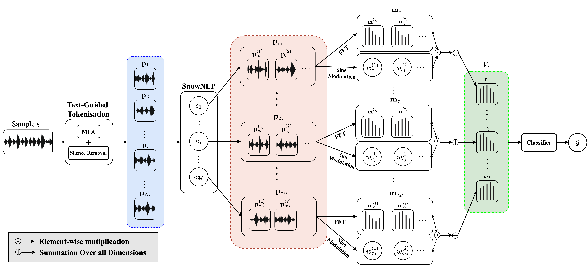

Method Overview

Given an input sample s, our method proceeds as follows: (a) Extract phonetic tokens
{pi}i∈{1,2,...,Ns} based on the provided caption. (b) The tokens are then classified into M classes, resulting in a list of to-
kens associated with each class. (c) Utilizing a sine function across the temporal dimension, we compute weights for each
token. By taking the weighted sum of the tokens, we generate a M -dimensional feature volume Vs, each dimension corre-
sponding to a class. (d) The feature volume Vs is passed to the classifier, producing the predicted identity y^.